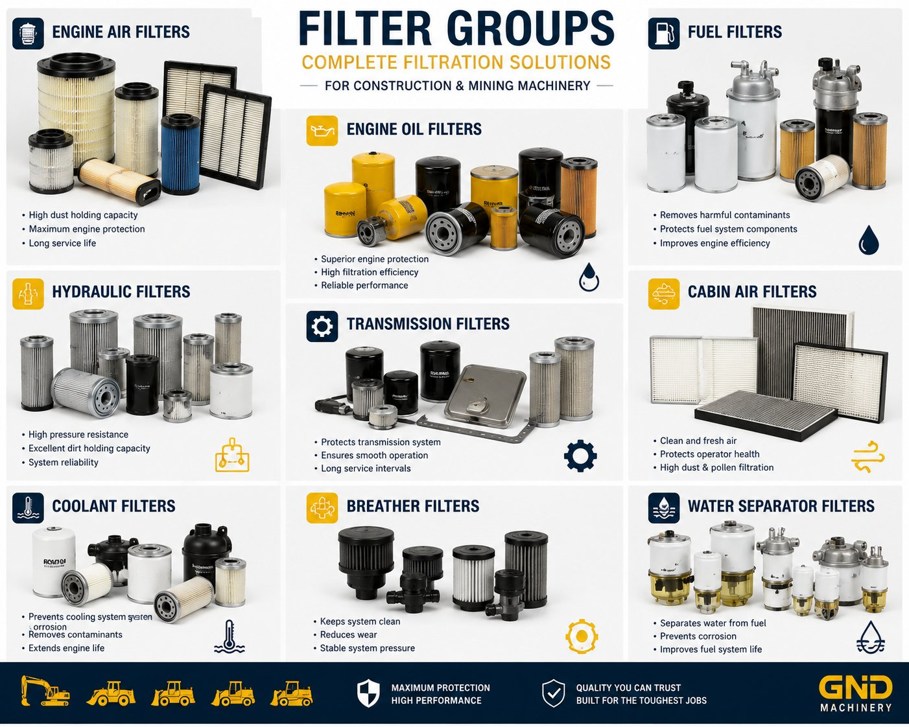

Orijinal ve muadil filtrasyon çözümleri, ağır iş makinelerinin en yüksek performansta çalışmasını sağlar. GND Machinery, ekskavatör, yükleyici ve diğer inşaat/madencilik makineleri için yağ, yakıt, hava, hidrolik ve kabin filtreleri tedarik eder.
Teklif Al →Üretici ortaklarımızdan doğrudan temin edilen, talep üzerine tam spesifikasyon ve teslimat süresi bilgisi sağlanan fabrika çıkışı sıfır üniteler.
Global ağımızdan temin edilen, çalışma saatlerinize ve bütçenize uygun, incelemesi yapılmış ikinci el üniteler.
Rutin bakım için hızlı teslimat ve düşük maliyet sunan yerli üretim filtreler.
Belirli bir standardı tercih eden alıcılar için köklü markalardan ithal edilen filtreler.
Garanti kapsamındaki kullanım için makinenizin modeliyle birebir uyumlu orijinal ekipman üreticisi (OEM) filtreleri.
Doğru seçenek; makinenizin markasına, modeline ve parçanın operasyonunuz için ne kadar kritik olduğuna bağlıdır. Size özel bir öneri için makine bilgilerinizle WhatsApp'tan bize ulaşın.
WhatsApp'tan Tedarik Sorun →Dünya çapında güvenilir üreticilerden sıfır ve ikinci el ekipmana erişim.
Bütçenize, zaman çizelgenize ve spesifikasyonunuza uygun esnek tedarik.
Kayıt formu olmadan doğrudan WhatsApp üzerinden fiyat ve stok bilgisi alın.
Kendi yedek parça ve satış sonrası ağımızla desteklenir.